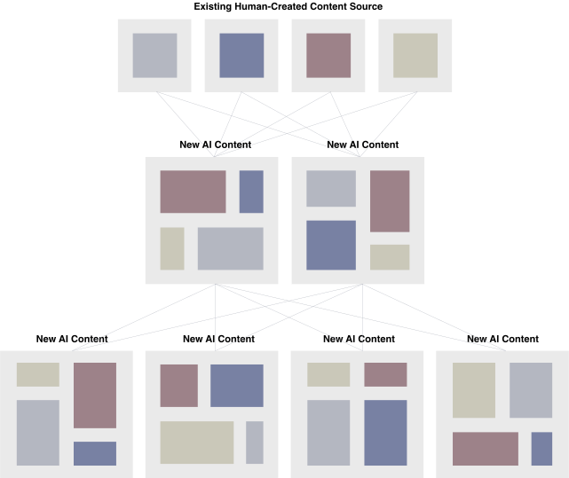
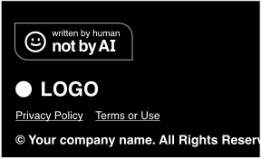
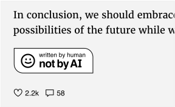
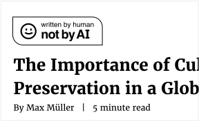
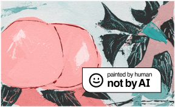
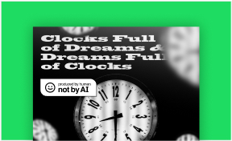
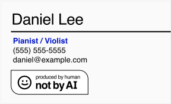

Artificial Intelligence (AI) is trained using human-created content. If humans stop producing new content and rely solely on AI, online content across the world may run the risk of becoming repetitive and stagnant.
If your content is not AI-generated, add the badge to your work, with pride.
The Not By AI badge is created to encourage more humans to produce original content and help users identify human-generated content. The Ultimate goal is make sure humanity continues to advance.
An expert estimates that 90 percent of online content could be generated by AI by 2025.1 With the surge in AI-generated content, it is important to note that AI is trained on human-generated content. If humans rely solely on AI to generate content moving forward, any new content generated by AI may just be recycled content from the past. This could pose a major obstacle to human advancement. Only by limiting the reliance on AI and continue to create original content can propel us forward as a species.

The chart represents a scenario in which humans stop generating new content and AI reuses pre-existing content to produce new content.
It is worth mentioning that AI technologies mark a major milestone in the history of technology and the Not By AI badge is not designed to discourage the use of AI. Instead, it is to make sure that, while we celebrate the achievement, we work with AI instead of being replaced by AI.
Who Can Use the Badge
Understanding that there is a blurred line between what is considered AI-generated vs human-generated, if you are a content creator, such as a writer, researcher, artist, music producer, sound designer, or filmmaker, and you estimate that at least 90% of your content is created by humans, you are eligible to add the badge into your website, blog, essay, publications, resume, or whatever your project is. The 90% can include using AI for inspiration purposes or to look for grammatical errors and typos.
Which Badge Should I Use
When to use the Painted By Human Not By AI badge:
Use this badge if your artwork, including digital and traditional art, contains less than 10% of AI output.
When to use the Written By Human Not By AI badge:
Use this badge if your article, including blog posts, essays, research, letters, and other text-based content, contains less than 10% of AI output.
When to use the Produced By Human Not By AI badge:
Use this badge if your audio (music, vocal, sound effects, voice over, and other sounds) or video (films, movies, TikTok/YouTube/Instagram and other social clips, tutorials, and other video-based content) contains less than 10% of AI output.
If you want to indicate that your overall content, which could include images, text, and audio, follows the 90% rule mentioned above, use the Produced By Human Not By AI badge to accommodate all. Alternatively, you may opt to display all relevant badges.
Linking the badge out to notbyai.fyi is highly recommended. Wrap the image using the anchor HTML element with the href attribute. For example,
<a href="https://notbyai.fyi"><img src="written-by-human-not-by-ai-white.svg" alt="written By human, not by AI"></a>
This allows your audience to understand the mission and why you participate in this movement by clicking on the badge to learn more.
Examples
Add to a website

Add to a blog article

Add to an essay

Add to an artwork

Add to an album cover or a musician profile

Add to a resume or a business card

Why Should I Use the Badge
You should add the badge to your work because it helps your audience recognize your human-first approach, which, in turn, fosters awareness and encourages more individuals to produce new and original content. This process makes sure we, as a species, continue to contribute to online content collectively and prevent online content from being replaced by recycled content produced by AI.
Some websites, like WIRED, publish announcements to achieve similar goals. However, these announcements may no longer be visible shortly after their release. With the Not By AI badge, you can ensure that this messaging receives constant exposure. Linking the badge out to notbyai.fyi is highly recommended.
Badge Use
The following guidelines provide instructions on how to use the Not an AI badge.
Respect the clear space: Clear space is the surrounding area around the badge that should avoid any content. The minimum clear space is the x-height of the Not By AI typemark.
Do not alter the badge: The badge should not be altered or modified in any way.
Minimum Size: To make sure that the badge remains legible and recognizable, it is important to maintain the minimum size of 42 px high for 1x resolution screens, or 84 px high for 2x resolution screens.
While the Not By AI badge is meant to be displayed and noted, the content creator is welcome to place the badge in a less visible area, such as a website footer or the back of an album, to prevent the badge from visually competing with the content.
Incorrect badge usage examples:
Do not rewrite the badge
Do not replace any colors the badge
Do not add effects the badge
Do not make changes to badge elements
Make sure to maintain the minimum size
Make sure badge is legible
Legal Effect
The Not By AI badge currently does not hold any legal effect significance and displaying the badge on any asset does not guarantee the content is not majorly created by AI. Legal experts are encouraged to get in touch to explore the potential of formalizing and regulating the use of the Not By AI badge.
Why 90% of online content could be ‘generated by AI by 2025' https://www.youtube.com/watch?v=DgYCcdwGwrE